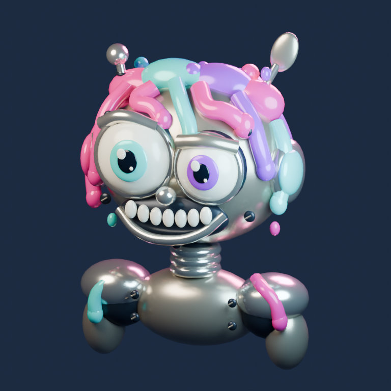

Z KODU DO TRZECH WYMIARÓW
Mały robot.
Wielka osobowość.
Metal, wielkie oczy i odrobina neonowego chaosu.
Oglądaj taniec i obracaj naszego bohatera.
ROBOT / NEONOWE RUINY AIMODEL 3D

Ładowanie modelu 3D…
Przeciągnij, aby obrócić · Dwa palce lub kółko, aby przybliżyć
01 / WYGLĄDDuża głowa, mały korpus i krótkie nóżki — cała sylwetka stworzona proceduralnie w Blenderze. Podgląd 3D może różnić się od renderu.
02 / CO DALEJObracaj postać również podczas tańca. Układ na podstawie nagrania referencyjnego: boczne ruchy głowy, powitanie, gitara i sprężysty przysiad. 40 sekund w pętli, bez dźwięku. Przesuń suwak, aby obejrzeć wybrany gest.